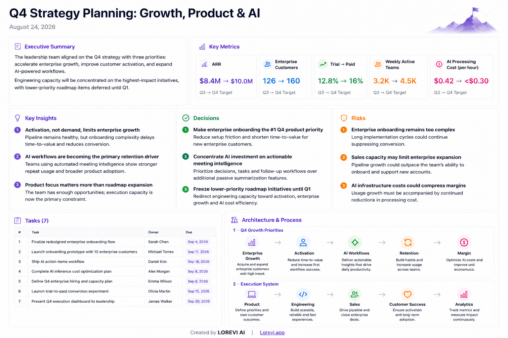
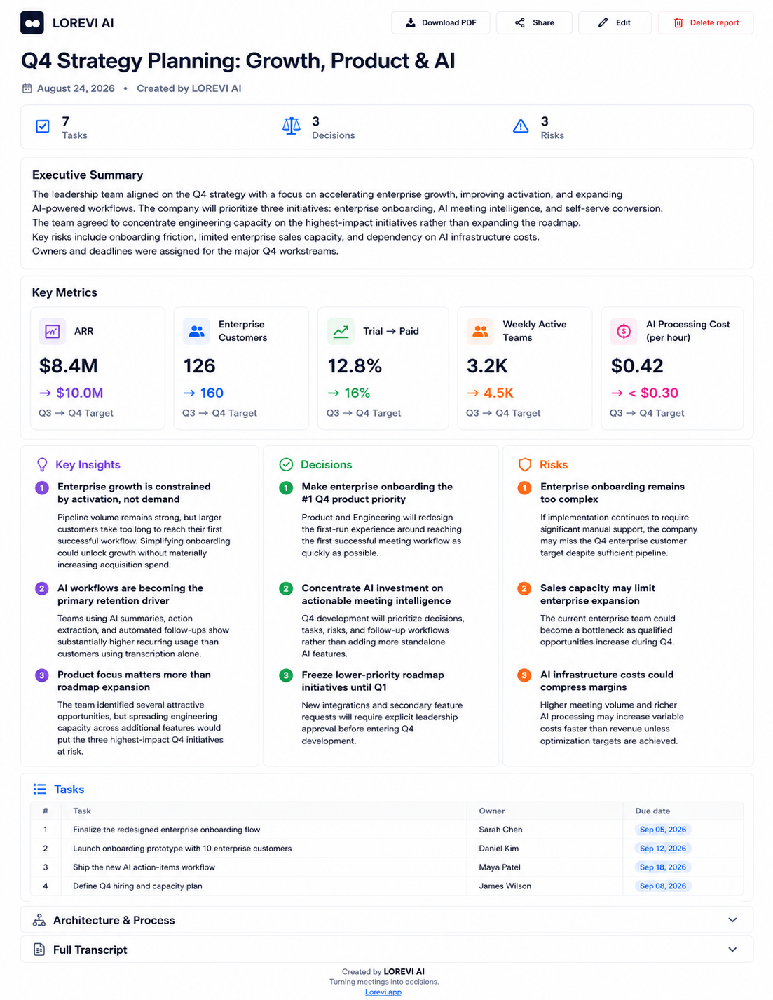

Transformă înregistrarea ședinței într-un rezultat gata de folosit
LOREVI analizează audio sau video și creează un Executive Slide plus un raport interactiv cu metrici cheie, decizii, acțiuni, responsabili, termene, riscuri și insight-uri.

După ședință
Nu pierde timp redactând manual rezultatele ședinței
Un proces-verbal util nu este doar o transcriere. Echipa trebuie să vadă clar ce s-a decis, cine răspunde și care sunt pașii următori.
Păstrează toate acordurile
Deciziile, acțiunile, responsabilii și termenele rămân documentate clar.
Elimină notițele manuale
Treci direct de la înregistrare la un rezultat structurat fără să reasculți întreaga ședință.
Distribuie rezultatul
Editează raportul, trimite linkul echipei sau exportă Executive PDF.
Rezultatul ședinței
Nu doar transcriere. Două livrabile gata pentru lucru.
Executive Slide
Rezumat executiv, metrici cheie, insight-uri, decizii, riscuri și acțiuni într-o singură pagină.

Raport Web interactiv
Consultă detaliile și transcrierea, editează rezultatul AI și distribuie echipei versiunea actualizată.
Metrici cheie
Vezi imediat cifrele care au contat
creștere discutată
reducerea ciclului
aria lansării
exemplu de obiectiv
Date ilustrative. LOREVI extrage metricile din conținutul real al ședinței.
Pentru ședințe în care rezultatul contează
Executivi & manageri
Vezi metricile, deciziile și riscurile fără să reasculți înregistrarea.
Echipe Product & Project
Clarifică deciziile, acțiunile, responsabilii și termenele.
Sales & consultanță
Captează nevoile clientului, angajamentele și pașii următori.
Audio / Video → LOREVI → Executive Slide → Raport interactiv → Editare / Distribuire / PDF
Nu trimite o înregistrare de o oră. Distribuie rezultatul ședinței.